Medicina
Exames, ASO e acompanhamento da saúde ocupacional.
APRESENTAÇÃO COMERCIAL · 2026
Medicina ocupacional, segurança do trabalho, documentos e eSocial conectados à rotina de quem precisa decidir e operar.
Use as setas, o teclado ou deslize para avançar.
Uma parceria para RHs e gestores que precisam de menos retrabalho e mais previsibilidade.
O ponto de partida
Os gargalos aparecem em momentos que não podem parar: uma admissão, um exame, um documento vencido ou um evento do eSocial.
O exame e o ASO não acompanham o ritmo da contratação.
Laudos, programas e certificados ficam difíceis de localizar.
Vencimentos e pendências dependem de lembretes soltos.
O documento não acompanha a realidade da função ou do risco.
A proposta SERMST
A SERMST combina atendimento clínico, engenharia e gestão documental para que cada etapa faça sentido na operação da empresa.
Exames, ASO e acompanhamento da saúde ocupacional.
Riscos, programas, laudos, treinamentos e prevenção.
Documentos, vencimentos e eSocial com rastreabilidade.
O trabalho não termina na entrega do documento. Ele precisa continuar coerente com a operação.
Experiência que vira escala
Da unidade central às operações com várias localidades, a SERMST organiza a rotina para o RH enxergar o que vem depois.
Empresas atendidas
Uma seleção de empresas que já confiaram à SERMST a rotina de saúde e segurança do trabalho. A carteira é maior — estes são apenas alguns exemplos.
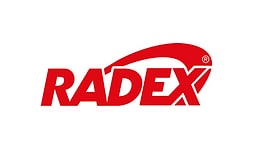
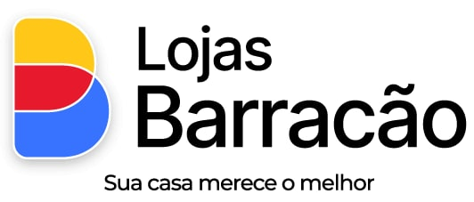
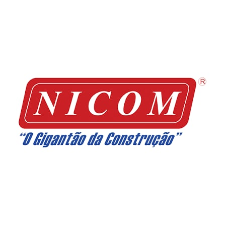
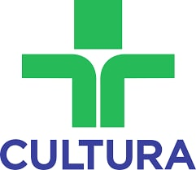

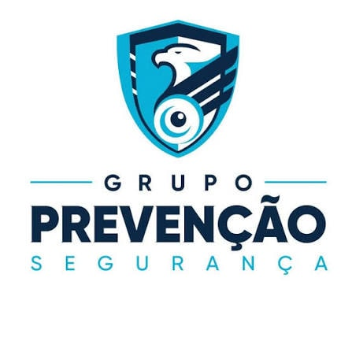
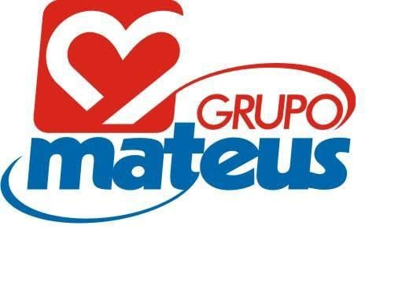
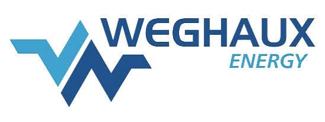
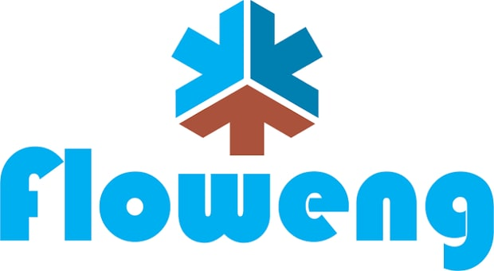
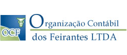
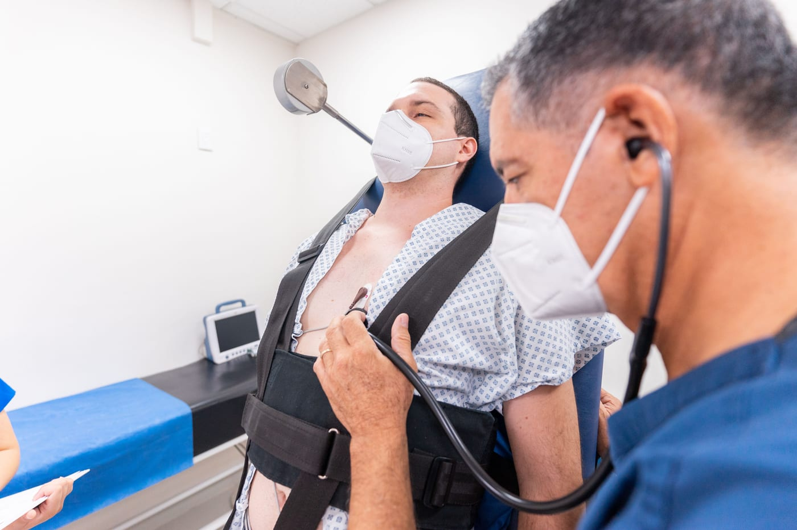
01 · Medicina ocupacional
A saúde ocupacional acompanha a jornada do colaborador e os riscos da função — do primeiro exame ao acompanhamento periódico.
Atendimento médico ocupacional, exames laboratoriais, audiometria, espirometria e outros complementares definidos conforme o PCMSO e os riscos da função.
02 · Segurança do trabalho
Mais do que preencher modelos, é preciso entender os riscos, as funções, os ambientes e as mudanças que acontecem no dia a dia.
Treinamentos teóricos e práticos, nas modalidades presencial e EAD, conforme o perfil da empresa.
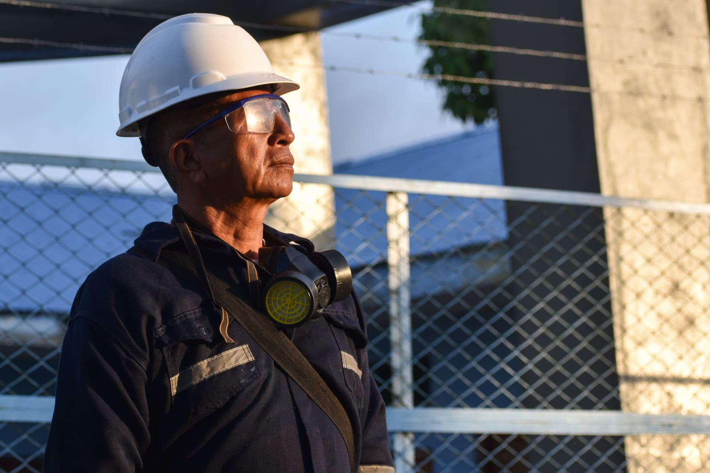
Inventário de riscos e plano de ação.
Laudos e avaliação das condições ambientais.
Programas de gerenciamento de resíduos sólidos e de serviços de saúde.
Treinamentos de todas as NRs aplicáveis, CIPA, ergonomia e prevenção.
Laudos de insalubridade e periculosidade, com apoio técnico.
03 · eSocial SST
Quando as informações são organizadas desde a origem, o RH reduz retrabalho e consegue acompanhar o que foi enviado, o que falta e o que precisa de revisão.
Processo, conferência e suporte ao RH para a rotina não depender de uma única pessoa.
Estrutura própria
No Centro Histórico de São Paulo, a SERMST reúne atendimento clínico, laboratório e exames complementares em um mesmo endereço — com definição conforme o PCMSO e os riscos da função.
Mais de 500 análises laboratoriais, além de exames de imagem, RX, teste ergométrico, toxicológico e avaliação psicossocial.
Como começamos
O comercial organiza o próximo passo a partir do porte, da operação, da urgência e do que a empresa já possui.
Entendemos o momento, os riscos e as prioridades.
Definimos exames, documentos e responsabilidades.
Colocamos a rotina em movimento com equipe técnica.
Seguimos prazos, pendências e próximos ciclos.
O que muda na prática
O objetivo não é acumular documentos. É deixar a rotina mais fácil de governar.
Atendimento nacional
Atendimento em nível nacional, com gestão centralizada e apoio local conforme a distribuição das unidades, equipes e riscos da sua operação.
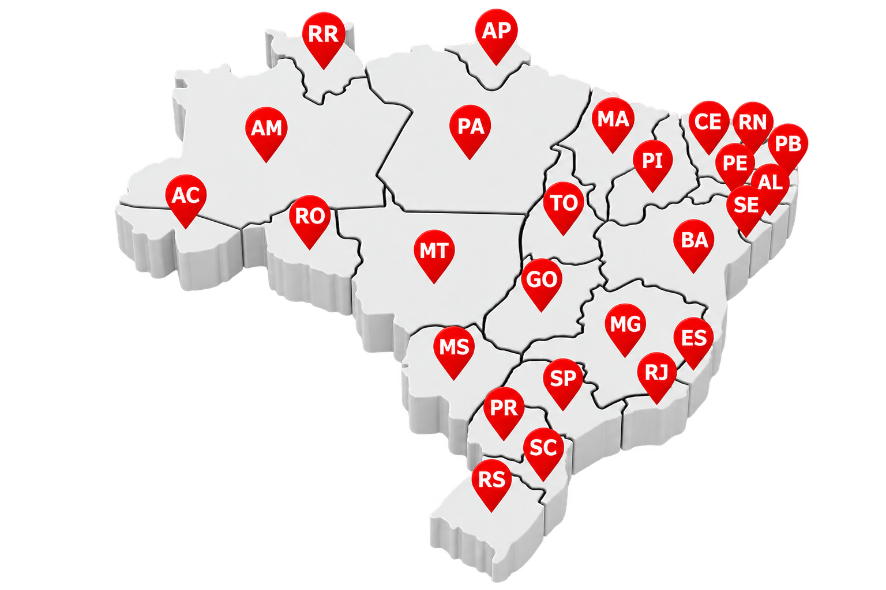
Responsabilidade técnica
Aqui estão os responsáveis que estão à frente de toda a operação de saúde e segurança do trabalho.
Engenheiro de Segurança do Trabalho
CREA/SP nº 5069926356 · SSST/MTE nº SP/010724-7
Higienista Ocupacional · Técnico em Segurança do Trabalho
CREA/SP nº 5061899709 · SSST/MTE nº 51/07383-6
Médico do Trabalho · CRM/SP 7946 · RQE 68628
Reputação pública
“Excelente clínica de exame admissional.”
“Localização ótimo atendimento :)”
Próximo passo
Conte o cenário da sua empresa. A equipe comercial entende o momento antes de indicar o caminho.